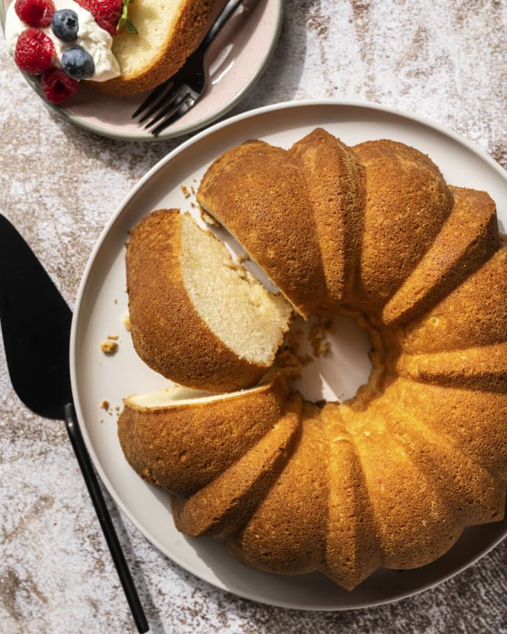
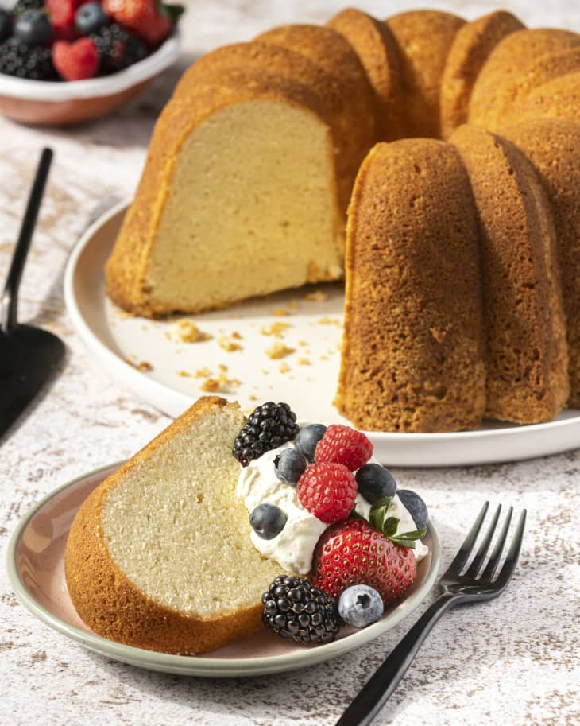

01/Feb
Cream Cheese Pound Cake
If you are looling for the perfect cream cheese piund cake recipe that turns out buttery, moist, and dense each and every time, add this year-round crowd-pleaser to your list! Using only 7 simple ingredients, this easy cream cheese pound cake will quickly become your favorite, serve plain with a sprinkle of poewdered sugar or offer homemade whipped cream and berries, or a dizzle of salted caramel or fudge sauce.

Homemade pound cake is one of my all-time favorite desserts. It's simple yet decadent, tastes delicious with whipped cream and berries, and looks party-ready straight out of the pan. My secret to the very best one? Cream cheese! Cream cheese gives pound cake a super-moist, pleasantly dense texture that's simply irresistible. Here's how to do it.
What Does Cream Cheese Pound Cake Taste Like?
Cream cheese pound cake tastes like traditional pound cake with a slightly tangy flavor. But its addition has less to do with taste and more to do with texture. The cream cheese helps keep the pound cake moist and dense (in a good way), similar to how yogurt or sour cream often add moisture to baked goods. Even if you over-bake this cake slightly, the cream cheese will help keep it moist and prevent it from drying out.
Why Does My Cream Cheese Pound Cake Fall?
There are a few reasons why your pound cake might fall, but the most common reason is that the cake has been exposed to cool air before it was fully baked. This could happen if you open the oven door too many times during baking, or if you remove the cake from the oven before it's fully baked. If this happens, pop the cake back in the oven and bake until a toothpick comes out clean. The cake won't rise again, but it will taste delicious nonetheless.